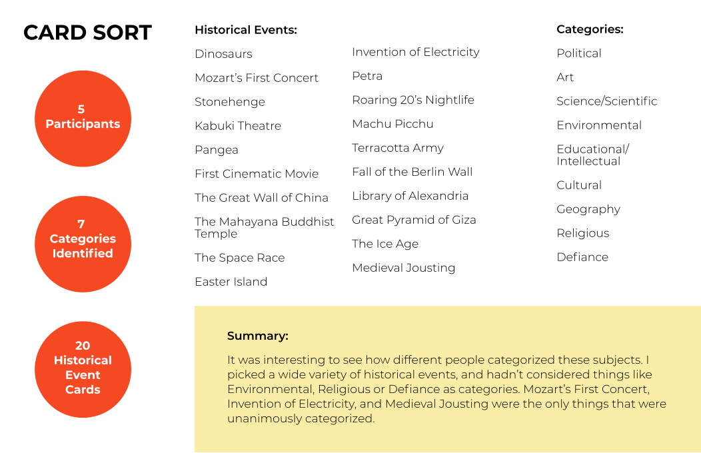
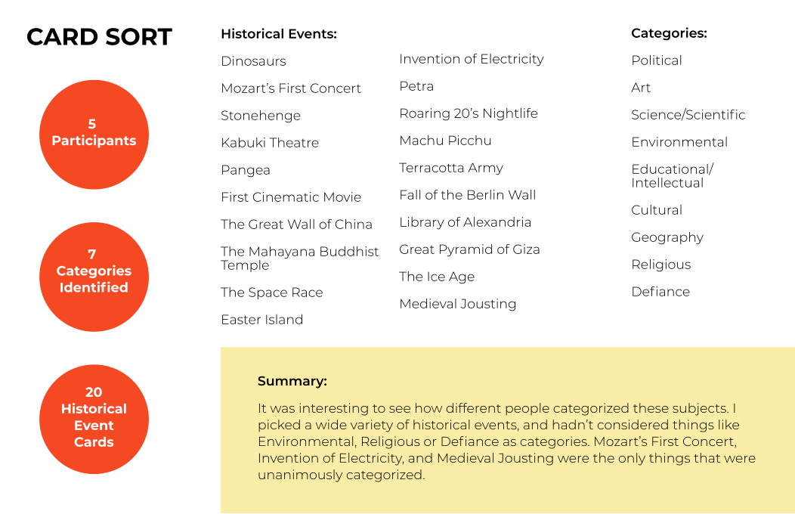
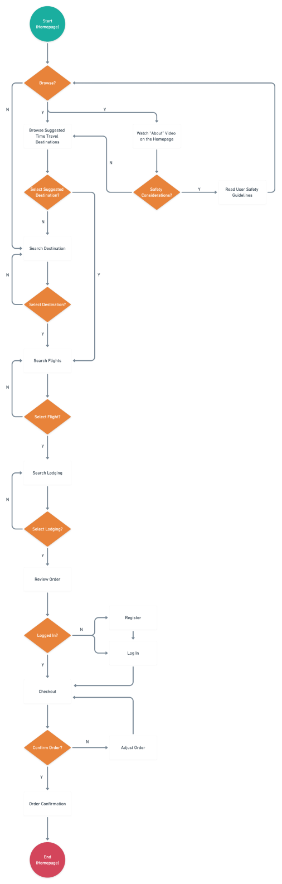
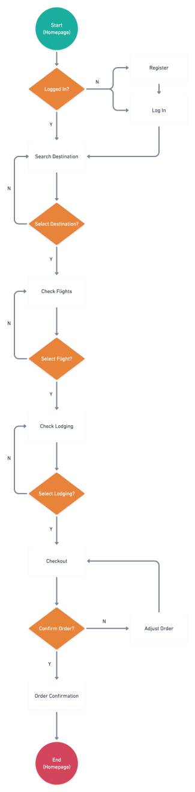
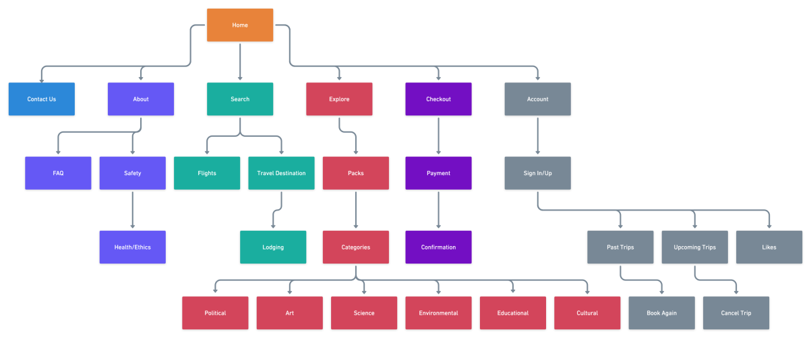

Zeit is a fictional company looking to start up a business in booking time travel resort trips to the past. Time travel tourism is a fresh market with a lot of unknowns. Zeit has laid many ground rules for time travel tourism, which involves only being able to go to the past in specific locations/times where they have their resorts in place. Customers must travel to Zeit headquarters in Germany and will time travel from there.
Innovation and creativity is a necessary skill when designing for the future. Products that currently do not exist are being imagined and created every day. That is what Zeit is all about. Researching for something that does not currently exist can prove difficult, however this was approached from multiple angles.
Research Goals
Interview Findings
Key Takeaways
 

User and Task Flows were created based off of the research, as well as a Site Map for Zeit. The User Flow was created with the intention of someone who is a bit more careful with their decisions and might spend more time on the homepage and browsing different options before deciding to book a trip.
User Flow
Task Flow
Sitemap

6 participants tested the flow of the site and suggested minor changes to most of the flow. The booking sections required the most updates, since it also requires the most steps. Adding the ability to edit the order was the most crucial and important note from the usability testing.